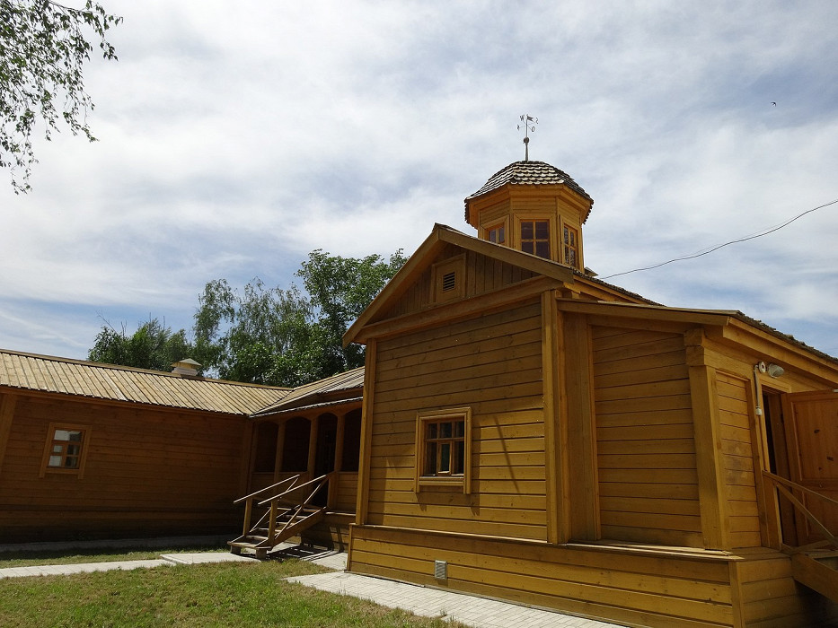

Знаменитый критик и литературовед 19 века Виссарион Белинский всю жизнь тосковал по местам, где провел свое детство и юность — маленьком городке Чембар Пензенской губернии, куда он не возвращался с 1830 г. Отцовский дом с кабинетом уездного лекаря и башенкой для метеорологических наблюдений, уездное училище, в котором с 1822 по 1825 гг. обучался Белинский, — описания этих мест можно найти в его многочисленных записях.
АдресМузей-усадьба В. Г. Белинского
